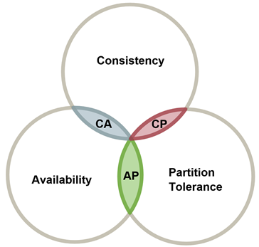
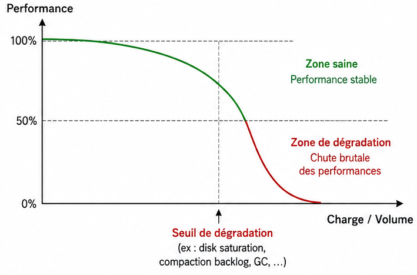

# Cassandra ... ## ... or not <img src="./img/1-hamlet.png" style="position:absolute;right:0;top:50%" /> --- <!-- .slide: class="didascalie" --> ## C'est quoi <br />Cassandra? <a href="https://youtu.be/lmwxJQZAfLI" target="_blank"> </a> --- ## Base de données - Créée par Facebook (2008) - Projet Apache (écosystème communautaire) - DataStax : principal acteur commercial<br>(support, AstraDB, DSE, ...) --- <!-- .slide: class="decomposed" --> Base de données - <!-- .element: class="expanded focused" --><strong>Orientée Famille de colonnes:</strong> - **1 famille** : ensemble de lignes - **1 clé par ligne** : simple ou composée (n colonnes) - **Valeur(s) par clé** : non requêtables - **Schéma fixe** : même structure pour toutes les lignes --- <!-- .slide: class="decomposition" --> Base de données - Orientée Famille de colonnes - <!-- .element: class="expanded focused" --><strong>Distribuée:</strong> - **Répartition** : Partition tolerance<br /><small>clé de répartition en plus de clé primaire</small> --- <!-- .slide: class="didascalie" --> ## C'est à dire ?  --- <!-- .slide: class="decomposed" -->  --- <!-- .slide: class="decomposition decomposed" -->  --- <!-- .slide: class="decomposition decomposed" -->  --- <!-- .slide: class="decomposition decomposed" -->  --- <!-- .slide: class="decomposition" -->  --- <!-- .slide: class="decomposed" --> Base de données - Orientée Famille de colonnes - <!-- .element: class="expanded" --><strong>Distribuée:</strong> - Répartition - <!-- .element: class="focused" --><strong>Multi-master</strong>: disponibilité<br>Selon répartition, 1 master par partition <div class="img-container" style="width:50%"> <p></p> <div style="color:red;font-size:small;font-weight:bold;top:55%;left:41%;">Here ➜</div> </div> --- <!-- .slide: class="decomposition" --> Base de données - Orientée Famille de colonnes - <!-- .element: class="expanded" --><strong>Distribuée:</strong> - Répartition - Multi-master - <!-- .element: class="focused" -->Compromis <strong>Consistance</strong>/latence “ajustable” --- <!-- .slide: class="decomposed" --> Niveau de consistance - <!-- .element: class="expanded focused" --><strong>Limite minimale</strong>:<br>Données sur 1, 2 ou 3 noeuds, ou sur tous --- <!-- .slide: class="decomposition" --> Niveau de consistance - Limite minimale: 1, 2, 3, *ALL* - <!-- .element: class="expanded focused" --><strong>Par quorum</strong>: selon réplication et noeuds<br><small>Exemple : Si réplication à 3 avec 5 noeuds, alors quorum local à 2</small> --- <!-- .slide: class="decomposed" -->  --- <!-- .slide: class="decomposition decomposed" -->  --- <!-- .slide: class="decomposition decomposed" -->  --- <!-- .slide: class="decomposition" -->  --- Base de données - Orientée colonnes - Distribuée - <!-- .element: class="expanded focused" --><strong>Performance écriture</strong>: - <small>Example: Uber</small> - <small>Dizaines de millions de requêtes/s</small> - <small>Pétaoctets de données</small> - <small>Centaines de clusters (6 à 450 nœuds)</small> --- <!-- .slide: class="decomposed" --> - <!-- .element: class="expanded focused" --><strong>CQL</strong>: SQL like - Ticket d'entrée faible pour les habitués SQL - Outils de validation syntaxe et grammaire (tests) ```sql INSERT INTO a_table(foo, bar, lorem) VALUES(1, 2, '..'); UPDATE a_table SET foo = 1 WHERE lorem = '..'; -- !upsert DELETE FROM a_table WHERE foo = 2; ``` --- <!-- .slide: class="decomposed decomposition" --> - CQL - <!-- .element: class="expanded focused" --><strong>Batch</strong>: Économie d'échelle - Réutiliser ressources pour plusieurs requêtes<br><small>Exemple : Réduire roundtrip réseau, I/O</small> - Garantir l'atomicité <small>(si une seule partition)</small> - Pas magique : à ne pas généraliser <small>(surtout en multi-partitions)</small> ```sql BATCH INSERT INTO merchant(country, brand, ..) VALUES ('FR', 'IM', ..); INSERT INTO merchant(country, brand, ..) VALUES ('FR', 'EM', '..'); APPLY BATCH; ``` --- <!-- .slide: class="decomposition" --> - CQL - Batch - <!-- .element: class="expanded focused" --><strong>Écriture conditionnelle</strong>: - `INSERT`<br><small>Exemple : Créer un vendeur uniquement si nouveau</small> --- <!-- .slide: class="decomposed" -->  --- <!-- .slide: class="decomposition" -->  --- - CQL - Batch - <!-- .element: class="expanded focused" -->Écriture conditionnelle: - `INSERT` - <strong>`UPDATE`</strong><br><small>Exemple : Versioning article</small> --- <!-- .slide: class="decomposed" -->  --- <!-- .slide: class="decomposition" -->  --- - CQL - Batch - Écriture conditionnelle - <!-- .element: class="focused" --><strong>Colonne "static"</strong>:<br>partage même valeur / <i>n</i> lignes partition --- <!-- .slide: class="didascalie" --> ## Et sinon ...  --- <!-- .slide: class="decomposed" --> - <!-- .element: class="focused" --><strong>Pas de transaction</strong>: atomic batch, idempotence --- <!-- .slide: class="decomposition decomposed" --> - Pas de transaction - <!-- .element: class="focused" --><strong>Transformation sur mise à jour</strong>:<br>uniquement possible sur colonnes compteurs ou collections  --- <!-- .slide: class="decomposition decomposed" --> - Pas de transaction - Transformation sur mise à jour - <!-- .element: class="expanded" -->Requête multi-partitions - <!-- .element: class="focused" --><strong>Impossible sur opération d'écriture</strong> --- <!-- .slide: class="decomposition decomposed" --> - Pas de transaction - Transformation sur mise à jour - <!-- .element: class="expanded" -->Requête multi-partitions - Impossible sur opération d'écriture - <!-- .element: class="focused" --><strong>Fortement déconseillé en batch</strong>:<br> empêche l'atomicité, contention du coordinateur --- <!-- .slide: class="decomposition decomposed" --> - Pas de transaction - Transformation sur mise à jour - <!-- .element: class="expanded" -->Requête multi-partitions - Impossible sur opération d'écriture - Fortement déconseillé en batch - <!-- .element: class="focused" --><strong>Fortement déconseillé en lecture</strong>:<br><tt>SELECT .. IN</tt> --- <!-- .slide: class="decomposition" --> - Pas de transaction - Transformation sur mise à jour - Requête multi-partitions - <!-- .element: class="focused expanded" --><strong>Pas de requête relationnelle</strong>:<br><tt>JOIN</tt> ou nested query - <small>Possible avec d'autre DB distribuée/orientée colonne<br>(ex : ClickHouse, MongoDB)</small>  --- Cas où il ne faut <small>(vraiment)</small> pas s'en servir? - <!-- .element: class="focused expanded" -->Développement - **Recherche multi-filtres**: respect strict ordre de la clé<br><small>Exemple : Point de vente Pays/Enseigne/...</small> --- <!-- .slide: class="decomposed" -->  **Recherche par Pays**: 👌 ```sql SELECT * FROM a_table WHERE Pays = 'FR'; ``` --- <!-- .slide: class="decomposed decomposition" -->  **Recherche par Pays et Enseigne**: 👌 ```sql SELECT * FROM a_table WHERE Pays = 'FR' AND Enseigne = 'IM'; ``` --- <!-- .slide: class="decomposition" -->  **Recherche par Enseigne**: ❌ ```sql SELECT * FROM a_table WHERE Enseigne = 'IM'; ``` Impossible de filtrer par `Enseigne` sans `Pays`. --- <!-- .slide: class="decomposed" --> Cas où il ne faut <small>(vraiment)</small> pas s'en servir? - <!-- .element: class="expanded" -->Développement - <!-- .element: class="expanded" -->Recherche multi-filtres - <!-- .element: class="focused" --><strong>Allow filtering</strong>: Filtrage côté client; Déconseillé <blockquote>When your query is rejected by Cassandra because it needs filtering, you should resist the urge to just add <tt>ALLOW FILTERING</tt> to it.</blockquote> --- <!-- .slide: class="decomposed decomposition" --> Cas où il ne faut <small>(vraiment)</small> pas s'en servir? - <!-- .element: class="expanded" -->Développement - <!-- .element: class="expanded" -->Recherche multi-filtres - Allow filtering: <small>déconseillé</small> - <!-- .element: class="focused" --><strong>Index secondaire</strong>: généralement déconseillé <blockquote>Secondary indexes are tricky to use and can impact performance greatly.</blockquote> --- <!-- .slide: class="decomposition" --> Cas où il ne faut <small>(vraiment)</small> pas s'en servir? - <!-- .element: class="expanded" -->Développement - <!-- .element: class="expanded" -->Recherche multi-filtres - Allow filtering: <small>déconseillé</small> - Index secondaire: <small>généralement déconseillé</small> - <!-- .element: class="focused expanded" --><strong>Dénormalisation automatique</strong>: Materialized view<br><small>"Tables" virtuelles mises à jour sur chaque écriture</small> - <small><strong>Meilleures performances que Index secondaire</strong>:<br>Plus stables depuis Cassandra 4<br>À restreindre à des cas spécifiques</small> ---  --- <!-- .slide: class="decomposed" --> Cas où il ne faut <small>(vraiment)</small> pas s'en servir? - <!-- .element: class="expanded" -->Développement - <!-- .element: class="expanded" -->Recherche multi-filtres - Allow filtering: <small>déconseillé</small> - Index secondaire: <small>généralement déconseillé</small> - <!-- .element: class="expanded" --><strong>Dénormalisation automatique</strong>: Materialized view<br><small>"Tables" virtuelles mises à jour sur chaque écriture</small> - <small>Meilleures performances que Index secondaire</small> - <!-- .element: class="focused" --><strong>Perte de performance en écriture</strong><br><small>(varie fortement selon workload)</small> --- <!-- .slide: class="decomposed decomposition" --> Cas où il ne faut <small>(vraiment)</small> pas s'en servir? - <!-- .element: class="expanded" -->Développement - <!-- .element: class="expanded" -->Recherche multi-filtres - Allow filtering: <small>déconseillé</small> - Index secondaire: <small>généralement déconseillé</small> - Dénormalisation automatique: <small>déconseillé en systématique</small> - <!-- .element: class="focused expanded" --><strong>Dénormalisation applicative</strong>: complexe - Dupliquer manuellement dans différentes tables - Conserver avantage batching --- <!-- .slide: class="decomposed decomposition" --> Cas où il ne faut <small>(vraiment)</small> pas s'en servir? - <!-- .element: class="expanded" -->Développement - Recherche multi-filtres - <!-- .element: class="expanded focused" --><strong>Recherche par intervalles</strong>: range query - Le critère doit faire partie de la *clustering key* - On ne peut filtrer une colonne que si la précédente est aussi filtrée (en égalité) - On ne peut pas rajouter un critère si la colonne précédente est une range query --- <!-- .slide: class="decomposed decomposition" --> Cas où il ne faut <small>(vraiment)</small> pas s'en servir? - <!-- .element: class="expanded" -->Développement - Recherche multi-filtres - Recherche par intervalles - <!-- .element: class="expanded focused" --><strong>Distribution hétérogène</strong>: selon cas d'utilisation - Diminution parallélisme - Dépassement cache I/O - Partitionnement "à priori"<br>(vs rollover ElasticSearch); <small>Exemple : article/pdf</small> - Contournement par <i>Synthetic sharding</i> --- <!-- .slide: class="decomposed decomposition" --> Cas où il ne faut <small>(vraiment)</small> pas s'en servir? - <!-- .element: class="expanded" -->Développement - Recherche multi-filtres - Recherche par intervalles - Distribution hétérogène - <!-- .element: class="expanded focused" --><strong>Différentes manières de référencer les mêmes données</strong> - <i>Read-before-update</i>: hausse read par rapport à write - Compromis dénormalisation<br><small>(compensation applicative, problématique consistance/atomicité)</small> --- <!-- .slide: class="decomposed decomposition" --> Cas où il ne faut <small>(vraiment)</small> pas s'en servir? - <!-- .element: class="expanded" -->Développement - Recherche multi-filtres - Recherche par intervalles - Distribution hétérogène - Différentes manières de référencer les mêmes données - <!-- .element: class="expanded focused" --><strong>Qualité du driver</strong> ```java bind(Object... values) ``` --- <!-- .slide: class="decomposition" --> Cas où il ne faut <small>(vraiment)</small> pas s'en servir? - <!-- .element: class="expanded" -->Développement - Recherche multi-filtres - Recherche par intervalles - Distribution hétérogène - Différentes manières de référencer les mêmes données - Qualité du driver - <!-- .element: class="expanded focused" --><strong>Ordre résultats lecture figé</strong> par table --- <!-- .slide: class="decomposed" -->  **Tri par Pays**: ❌ <small>(ordre partitions)</small> ```sql SELECT * FROM a_table ORDER BY Pays DESC; ``` --- <!-- .slide: class="decomposed decomposition" -->  **Tri par Enseigne pour un Pays**: 👌 <small>(ordre <i>clustering keys</i>)</small> ```sql SELECT * FROM a_table WHERE Pays='FR' ORDER BY Enseigne DESC; ``` --- <!-- .slide: class="decomposed decomposition" -->  **Tri global par Enseigne**: ❌ <small>(multi-partitions par Pays)</small> ```sql SELECT * FROM a_table ORDER BY Enseigne DESC; ``` --- <!-- .slide: class="decomposition" -->  **Tri par ID puis Enseigne**: ❌ ```sql SELECT * FROM a_table WHERE Pays='FR' ORDER BY ID DESC, Enseigne DESC; ``` --- <!-- .slide: class="decomposed" --> Cas où il ne faut <small>(vraiment)</small> pas s'en servir? - Développement - <!-- .element: class="expanded" -->Exploitation - <!-- .element: class="expanded focused" --><strong>Complexité</strong>: - Sauvegarde - Periodic Anti-anthropy Repair - Incremental Repair <small>(mature depuis v4)</small> --- <!-- .slide: class="decomposition decomposed" --> Cas où il ne faut <small>(vraiment)</small> pas s'en servir? - Développement - <!-- .element: class="expanded" -->Exploitation - <!-- .element: class="expanded" -->Complexité: - Sauvegarde, <small>Periodic Anti-anthropy Repair, Incremental Repair</small> - <!-- .element: class="focused" --><strong>Cohérence des outils</strong> <small>(ex : incohérence options)</small> --- <!-- .slide: class="decomposition decomposed" --> Cas où il ne faut <small>(vraiment)</small> pas s'en servir? - Développement - <!-- .element: class="expanded" -->Exploitation - <!-- .element: class="expanded" -->Complexité: - Sauvegarde, <small>Periodic Anti-anthropy Repair, Incremental Repair</small> - Cohérence des outils - <!-- .element: class="focused" --><strong>Supervision, Logs parfois sibyllins</strong><br><small>(ex : slow query, malgré amélioration outillage depuis v4)</small> --- <!-- .slide: class="decomposition" --> Cas où il ne faut <small>(vraiment)</small> pas s'en servir? - Développement - <!-- .element: class="expanded" -->Exploitation - <!-- .element: class="expanded" -->Complexité: - ... - Cohérence des outils - Supervision, Logs parfois sibyllins - <!-- .element: class="focused" --><strong>Imprévisibilité options/use case</strong><small>(ex : compaction/gc)</small><br><small>Difficulté tuning, nécessité jouer plus paramètre en même temps plutôt que un à un comme généralement</small> --- <div style="text-align:left"> <p></p> </div> --- <!-- .slide: class="decomposed" --> Cas où il ne faut <small>(vraiment)</small> pas s'en servir? - Développement - <!-- .element: class="expanded" -->Exploitation - <!-- .element: class="expanded" -->Complexité: - ... - Supervision, Logs parfois sibyllins - <!-- .element: class="expanded focused" --><strong>Support / expertise</strong><br><small>(DataStax, Amazon Keyspaces, Instaclustr, ...)</small>: - <small>Coût important</small> - <small>Valeur variable selon besoins</small> --- <!-- .slide: class="decomposed decomposition" --> Cas où il ne faut <small>(vraiment)</small> pas s'en servir? - Développement - <!-- .element: class="expanded" -->Exploitation - <!-- .element: class="expanded" -->Complexité: - ... - Support / expertise <small>(Coût, valeur variable, ...)</small> - <!-- .element: class="expanded focused" --><strong>Documentation</strong>: abondante / parfois contradictoire - <small>Atomicité/isolation batch</small> - <small>Compaction selon use case</small> - <small>Bulk load</small> --- <!-- .slide: class="decomposed decomposition" --> Cas où il ne faut <small>(vraiment)</small> pas s'en servir? - Développement - <!-- .element: class="expanded" -->Exploitation - <!-- .element: class="expanded" -->Complexité: - ... - Documentation <small>(abondante / parfois contradictoire)</small> - <!-- .element: class="expanded focused" --><strong>Sizing</strong> - **Ticket d'entrée élevé**:<br><small>Complexité opérationnelle réellement rentable lorsque plusieurs équipes ou applications mutualisent un cluster</small> --- <!-- .slide: class="decomposed decomposition" --> Cas où il ne faut <small>(vraiment)</small> pas s'en servir? - Développement - <!-- .element: class="expanded" -->Exploitation - <!-- .element: class="expanded" -->Complexité: - ... - <!-- .element: class="expanded" --><strong>Sizing</strong> - Ticket d'entrée élevé - <!-- .element: class="focused" --><strong>Physique/dédié recommandé</strong>:<br><small>Cloud/Kubernetes possibles mais augmentent encore la complexité opérationnelle</small> --- <!-- .slide: class="decomposed decomposition" --> Cas où il ne faut <small>(vraiment)</small> pas s'en servir? - Développement - <!-- .element: class="expanded" -->Exploitation - <!-- .element: class="expanded" -->Complexité: - ... - <!-- .element: class="expanded" --><strong>Sizing</strong> - Ticket d'entrée élevé - Physique/dédié recommandé - <!-- .element: class="focused" --><strong>Reprise sur erreur</strong> - **Instabilité commit log**: intervention manuelle --- <!-- .slide: class="decomposition" --> Cas où il ne faut <small>(vraiment)</small> pas s'en servir? - Développement - <!-- .element: class="expanded" -->Exploitation - <!-- .element: class="expanded" -->Complexité: - ... - <!-- .element: class="expanded" --><strong>Sizing</strong> - ... - **Reprise sur erreur** - Instabilité commit log - <!-- .element: class="focused" --><strong>Disque plein</strong>: complexité restauration noeud --- - En ligne droite, ça va très vite - Ne pas demander de changer de direction - Le moindre écart se paie rapidement <img src="img/16-car.jpg" alt="Dragster" style="margin-left: -3.5em;width: 60%;border-radius:.4em" /> <img src="img/17-car.jpg" style="position: absolute;bottom: -10%;right: 0;width: 50%; border-radius:.2em; border: 1px white solid" /> --- <!-- .slide: class="decomposed" --> ## À expérimenter … (non exhaustif, selon use cases) - ClickHouse - SyllaDB - Yugabyte - Kafka (forever retention) - MongoDB sharding (distributed write, routing serveur) - ElasticSearch --- <!-- .slide: class="decomposition" --> ## À expérimenter … (non exhaustif, selon use cases) - ... - MongoDB sharding (distributed write, routing serveur) - ElasticSearch - SGBD “classiques” en distributed flavour - Amazon RDS / Aurora, Google Cloud SQL, Azure CosmoDB - MySQL Cluster, PostgreSQL + Citrus --- <!-- .slide: class="didascalie" --> ## Questions? [@cchantep](https://www.linkedin.com/in/cchantep/)